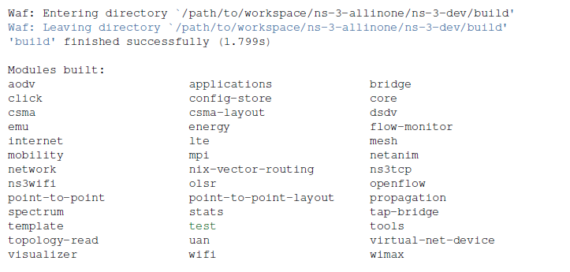
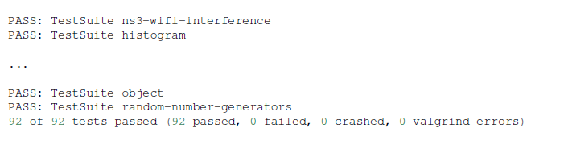

ns-3手册
1 介绍
2 资源
3 入门(Getting Started )
本节主要介绍ns-3的安装，包含支持的平台，先决条件，获取ns-3的方式，建 构ns-3的方式以及验证构建出来的ns-3二进制文件和运行简单的程序。
3.1 Overview
ns-3被构建成一组系统软件包，相互之间可以一起工作。用户程序可以通过 链接这些库来使用它们。用户程序一般使用C++或者Python语言编写。
ns-3是以源码的方式发布的，意味着目标系统首先需要具体一个软件工发环境来 编译ns-3，然后才能编译用户程序。ns-3原则上可以为一些系统分布事先编 译好的库，未来也许会以这种方式来发布，但是目前，许多用户通过自己编 辑ns-3本身来生成发布软件，因此拥有源码在旁边去重新编译库是很有用的。 如果有人想承担为一些操作制作pre-built库和包的工作，请联系 ns-developers的邮件列表。
在接下来的部分，我们来看如何使用两种不同的方式来下载和编译ns-3。第 一种方式就是从主站点下载和编译官方发布的源码。第二种方式就是获取和 编译ns-3的开发版拷贝。由于两种方式使用的工具完全不同，我们会分别介 绍这两种方式。
3.2 Downloading ns-3
ns-3系统总体上是一个相当复杂的系统，拥有许多其他的依赖组件。除了你 每天需要处理的系统（如GNU工具链，Mercurial，一个文本编辑器）外，你 需要确保一些额外的库已经安装好，才能进入下一步。ns-3提供了一个wiki 页面，包含了许多有用的提示与技巧。其中有一页是"安装“页面， http://www.nsnam.org/wiki/Installation.
该wiki页面中的"先决条件”部分解释了需要哪些安装包以支持ns-3的通用选 项。同时也提供了不同Linux版本中的命令来安装它们 。Cygwin用户则必须 使用Cygwin installer。
你也许想利用这个机会探索一下ns-3的wiki，因为那确实有大量的信息。
从现在开始，我们将假设读者正工作在Linux或一个类似Linux的环境中，并 且GNU工具链和上面提到的一些先决条件已经安装好。同时，我们也假设你 已经安装好了Mercurial和Waf，并在目标系统中运行。
ns-3代码在Mercurial仓库中，服务器为：http://code.nsnam.org。 你也 可以从 http://www.nsnam.org/release/ 下载一个tarball，或者可以使用 Mercurial从仓库中下载代码。我们建议使用Mercurial。在本部分最后，可 以看到如何获取tarball的指令。
开始使用Mercurial仓库最简单的方式是使用ns-3-allinone环境。这是一组 脚本，用于管理下载和编译ns-3中各自子系统。我们建议你在这个环境中开 始ns-3相关的工作。
一处实践方式是在自己的主目录下创建一个称为 workspace 的目录，在该目
录下，我们可以保存一份本地的 Mercurial 仓库。其他任何目录名称当然也
可以，但接下来我们会假定目录名为 workspace.
3.2.1 Downloading ns-3 Using a Tarball
Tarball是一种软件归档的特殊格式，包含许多文件，且可能被压缩过。 ns-3软件发布是通过一个可下载的tarball。通过tarball下载的过程很简 单;你只需要选择一个发布版本，然后下载它并解压它。
让我们假定，你作为一个用户，想在一个称为 workspace 的本地目录下
编译 ns-3。 如果你接受了 workspace 目录的方法，你可以输入如下命
令来获取一份发布版本的拷贝。
cd mkdir workspace cd workspace wget http://www.nsnam.org/release/ns-allinone-3.26.tar.bz2 tar xjf ns-allinone-3.26.tar.bz2
如果你切换到目录 ns-allinone-3.26 下，你会看到如下文件和目录。
ls bake build.py constants.py netanim-3.107 ns-3.26 pybindgen-0.17.0.post57+nga6376f2 README util.py
你现在就可以编译基本的 ns-3 的发布版本，可以直接跳到编译 ns-3 部 分。
3.2.2 Downloading ns-3 Using Bake
3.3 Building ns-3
3.3.1 Building with build.py
当从一个发布的tarball开始时，第一次编译 ns-3 项目可以使用一个非常 方便的程序来编译，该程序就在 allinone目录下。 该程序称为 build.py。 该程序为你默认配置大部分情况下都适用的选项。但是，如果需要使用更 高级的配置项来使用ns-3源码，则通常需要使用本地的 ns-3 编译系统， Waf，在本手册的后面会介绍到。
如果你使用一个tarball来下载，你应该会有一个目录称为 ns-allinone-3.26 ， 它在你的 ~/workspace 目录下。输入如下命令：
： ./build.py --enable-examples --enable-tests
因为在本手册中，我们会使用一些例子和测试用例，而他们默认情况下， 没有被编译，所以上述参数就是告知 build.py 为我们编译。该程序同时 也会默认编译所有能用的模块。之后，你可以编译ns-3，不要例子和测试， 或者去掉一些与你工作无关的一些模块。
当编译脚本编译你下载的不同模块时，你会看到许多典型的编译器输出的 信息。最终你会看到如下输出：
Waf: Leaving directory `/path/to/workspace/ns-allinone-3.26/ns-3.26/build' 'build' finished successfully (6m25.032s) Modules built: antenna aodv applications bridge buildings config-store core csma csma-layout dsdv dsr energy fd-net-device flow-monitor internet internet-apps lr-wpan lte mesh mobility mpi netanim (no Python) network nix-vector-routing olsr openflow (no Python) point-to-point point-to-point-layout propagation sixlowpan spectrum stats tap-bridge test (no Python) topology-read traffic-control uan virtual-net-device visualizer wave wifi wimax Modules not built (see ns-3 tutorial for explanation): brite click
没有编译的部分模块，会显示如下信息：
Modules not built (see ns-3 tutorial for explanation): brite click
这仅仅说明一些ns-3模块依赖的一些第三方库没有安装，或者编译配置要 求不要编译他们。这并不意味着模拟器没有编译成功或是它会提供错误的 结果 。
3.3.2 Building with bake
3.3.3 Building with Waf
3.4 Testing ns-3
你可以通过使用 ./test.py -c core 脚本来运行单元测试：
./test.py -c core
这些测试通过 Waf 并发运行。 你应该最终会看到一个报告显示如下：
92 of 92 tests passed (92 passed, 0 failed, 0 crashed, 0 valgrind errors)
这是重要的信息。
你同样也可以从Waf中查看总结信息输出，执行每个测试的测试动作脚本，实 际上看起来类似如下：  
该命令通常被用户运行来快速验证ns-3是否构建正确。
3.5 Running a Script
我们通常在Waf的控制下运行脚本。这允许构建系统确共享库的路径被正确设 置，且这些库在运行时能够被加载到。要运行一个程序，只要在Waf中使用 –run选项即可。让我们通过输入如下命令来运行一个相当Hello World的 ns-3程序：
./waf --run hello-simulator
Waf首先检查确保程序被正确地构建，然后根据需要执行一次构建过程。Waf 然后运行程序，产生如下输出：
Hello Simulator
祝贺你！你现在是一个ns-3用户了！
What do I do if I don’t see the output?
如果你看到Waf的信息显示构建完成成功了，但是并没有看到 "Hello
Simulator"输出，有可能是你在 Building with Waf 这一节中将构建模式切
换到 optimized ， 但是忘记切换为 debug 模式。在本手册中的所有控
制台输出使用了一个特别的ns-3日志组件，非常用助于将用户消息打开到控
制台上。当你编译优化版的代码，该组件中的输出会自动地被禁掉——它被“优
化”掉了。如果你并没有看到 "Hello Simulator" 输出，请输入如下命令：
./waf configure --build-profile=debug --enable-examples --enable-tests
告知Waf构建ns-3程序的Debug版本，包含例子和测试程序。你仍然必须通过 输入如下命令来构建代码的实际Debug版本：
./waf
现在，如果你运行 hello-simulator 程序，你应该看到预期的输出。
3.5.1 Program Arguments
为了将命令行中的参数传递给ns-3程序，可以使用如下模式：
./waf --run <ns3-program> --command-template="%s <args>"
替换<ns3-program>为你自己的程序名，<args>为参数。 传给Waf –command-template 参数基本上是一个构造实际命令行参数的方 法， Waf会使用该命令行来执行程序。 Waf检查构建是否完成，设置共享库 的路径，然后使用提供的命令行模板来调用可执行程序，为 %s 点位符插入 程序名。
另一个特别有用的例子是自己运行一个测试用例。让我们假设存在一个 mytest 测试用例。 在上面，我们使用 ./test.py 脚本来同时运行一系列 测试， 通过重复地调用真实的测试程序， test-runner. 为某个单独的测 试直接调用 test-runner ：
./waf --run test-runner --command-template="%s --suite=mytest --verbose"
这个命令将参数传递给 test-runner 程序中。因为 mytest不存在，所以会 产生一个错误信息。 要打印 test-runner可用的选项，输入如下命令：
./waf --run test-runner --command-template="%s --help"
3.5.2 Debugging
如果想运行ns-3程序在另一个工具控制下，例如一个调试器（例如：gdb)或 内存检查器（例如，valgrind),你可以使用类似 –command-template="…" 的形式。
例如，在gdb调试器下面运行你的ns-3程序 hello-simulator, 参数为 <args> ，命令如下命令：
./waf --run=hello-simulator --command-template="gdb %s --args <args>"
注意， –run 参数紧随着ns-3程序名，控制工具(gdb)为 –command-template参数的每一个标记。 –args 告诉gdb，如下的参数属 于"inferior"程序。（有些gdb不理解 –args特性）。在这种情况下，从 –command-template 中省略程序参数，使用 gdb的 set args命令。
我们可以结合这个方法以及之前的方法在调试器下运行一个测试：
./waf --run test-runner --command-template="gdb %s --args --suite=mytest --verbose"
3.5.3 Working Directory
Waf需要从它所在位置的ns-3树的顶端开始运行。它成为它的工作目录，输 出文件会被写入到工作目录中。如果你想将这些输出放在ns-3源码树之外？ 使用 –cwd 参数：
./waf --cwd=...
也许将你的工作目录作为输入文件的目录更方便，这种情况下，使用如脚本 会更方便：
function waff {
CWD="$PWD"
cd $NS3DIR >/dev/null
./waf --cwd="$CWD" $*
cd - >/dev/null
}